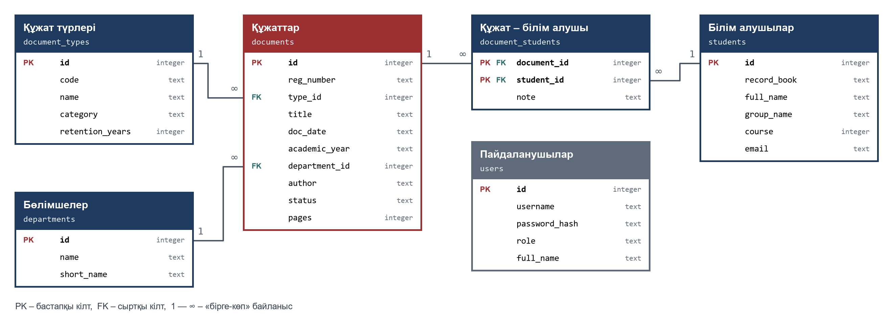
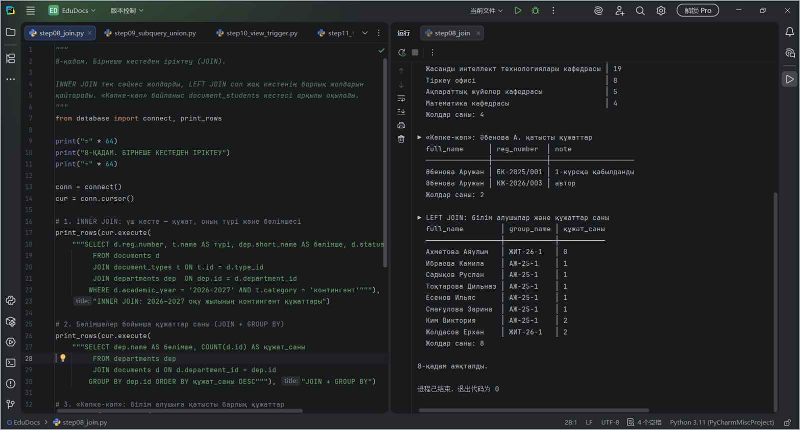
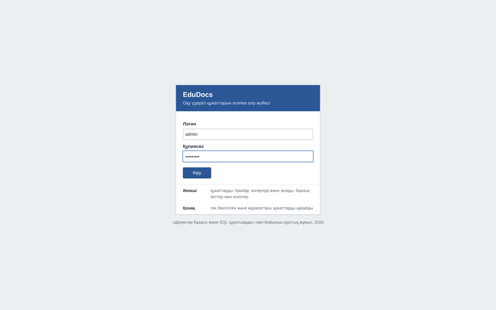
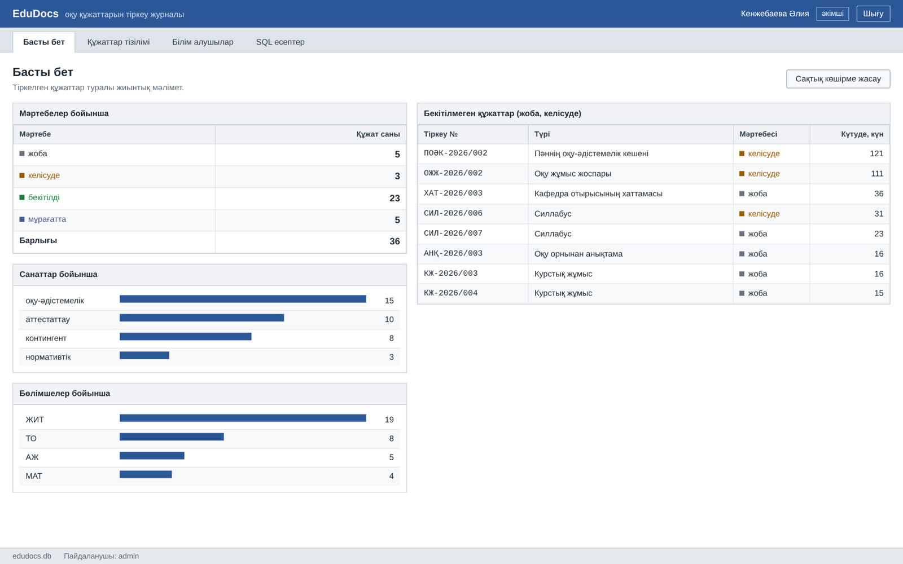
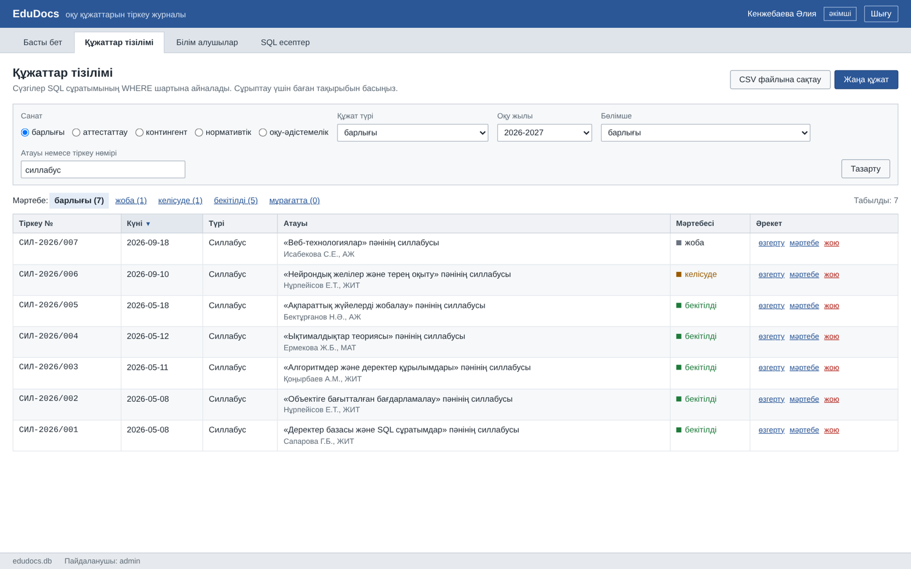
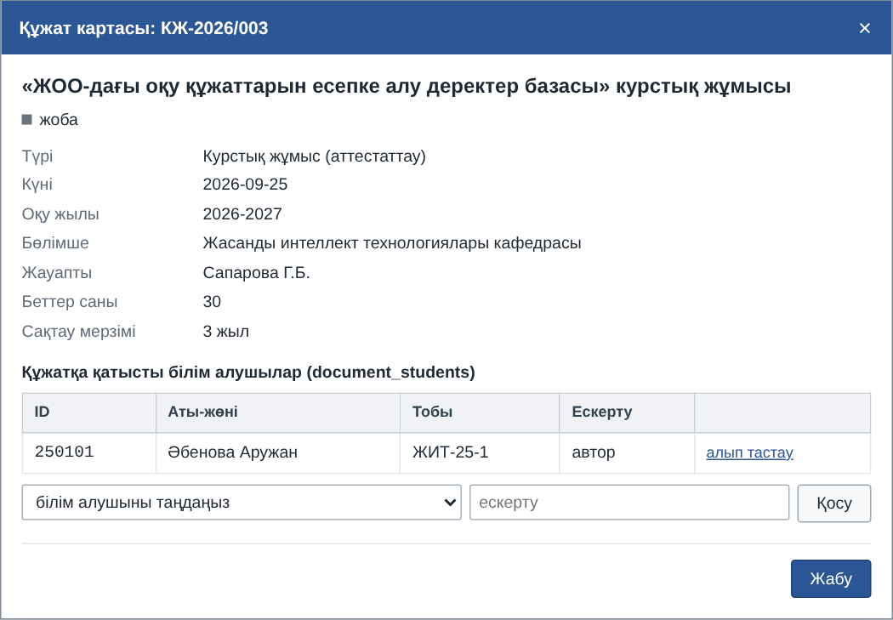
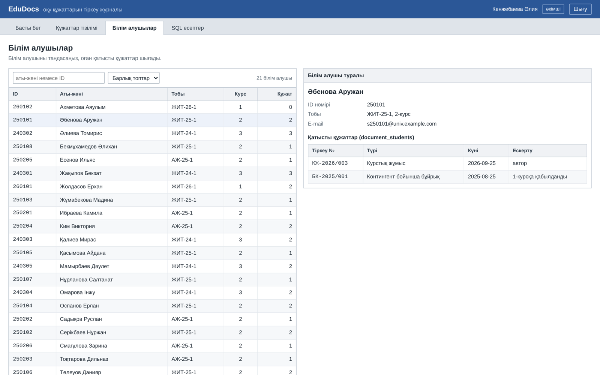
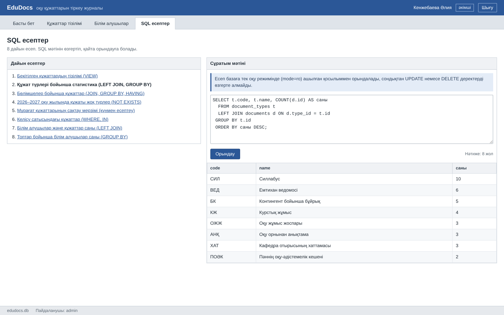

Мемлекеттік жоғары оқу орнындағы оқу үдерісіне қатысты құжаттарды есепке алуға арналған деректер базасын құру
Кафедралар мен тіркеу офисі дайындайтын оқу құжаттары (силлабустар, оқу жұмыс жоспарлары, емтихан ведомостары, контингент бойынша бұйрықтар, анықтамалар) бір тізілімде тіркеледі. Әр құжаттың бірегей тіркеу нөмірі, түрі, күні, оқу жылы, жауапты бөлімшесі және мәртебесі сақталады, ал бұйрықтар мен анықтамалар оларға қатысты білім алушылармен байланыстырылады.
Іске қосу
Python 3.9 немесе жаңа нұсқасы қажет. Репозиторийді жүктеп алып, PyCharm-да ашыңыз да, start.py файлын іске қосыңыз (немесе app бумасындағы app.py). Браузер http://127.0.0.1:8770/ адресін өзі ашады.
git clone <репозиторий> cd EduDocs python start.py
| Рөлі | Логин | Құпиясөз | Қолжетімді беттер |
|---|---|---|---|
| Әкімші | admin | Admin2026 | Басты бет, Құжаттар тізілімі, Білім алушылар, SQL есептер; құжаттарды енгізу, өзгерту, жою |
| Қонақ | qonaq | Qonaq2026 | Басты бет, Құжаттар тізілімі, SQL есептер; тек бекітілген және мұрағаттағы құжаттар |
edudocs.db базасы браузердің ішінде SQLite (WebAssembly) арқылы ашылады, ал Python серверінің орнына сұратымдарды JavaScript орындайды. Демода енгізілген өзгерістер бетті жаңартқанда жойылады. Толық нұсқа – python start.py.Деректер базасы
Схема үшінші қалыпты формаға келтірілген: 6 кесте, 4 сыртқы кілт (RESTRICT, CASCADE), 2 индекс, 1 көрініс (v_registry) және бекітілген құжатты жоюға тыйым салатын 1 триггер (trg_protect_approved).
| Кесте | Мазмұны | Жазба |
|---|---|---|
departments | бөлімшелер (кафедралар, тіркеу офисі) | 4 |
document_types | құжат түрлері: код, атауы, санаты, сақтау мерзімі | 8 |
documents | құжаттарды тіркеу журналы (негізгі кесте) | 36 |
students | білім алушылар | 21 |
document_students | құжат пен білім алушы арасындағы «көпке-көп» байланыс | 33 |
users | қосымшаның пайдаланушылары (логин, құпиясөз хэші, рөлі) | 2 |

PyCharm ортасындағы 12 қадам
| Скрипт | Курстық жұмыс міндеті |
|---|---|
step01_connect.py | деректер базасын құру, қосу және ажырату |
step02_create_tables.py | кестелер мен байланыстарды құру |
step03_insert.py | деректерді енгізу және шектеулерді тексеру |
step04_update_delete.py | деректерді өзгерту және жою |
step05_select_simple.py | бір кестеден іріктеу |
step06_filter.py | деректерді сүзгілеу |
step07_group_sort.py | жолдарды топтау және сұрыптау |
step08_join.py | бірнеше кестеден іріктеу |
step09_subquery_union.py | кірістірілген сұратымдар және UNION |
step10_view_trigger.py | көрініс және триггер |
step11_transaction_index.py | транзакциялар және индекс |
step12_er_diagram.py | деректер базасының диаграммасы |

Қосымша беттері






Жобадағы тұлғалардың аты-жөндері мен деректері ойдан құрастырылған және тек оқу мақсатында қолданылады.